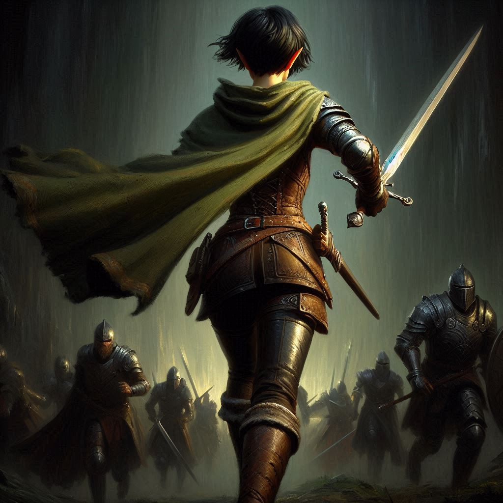
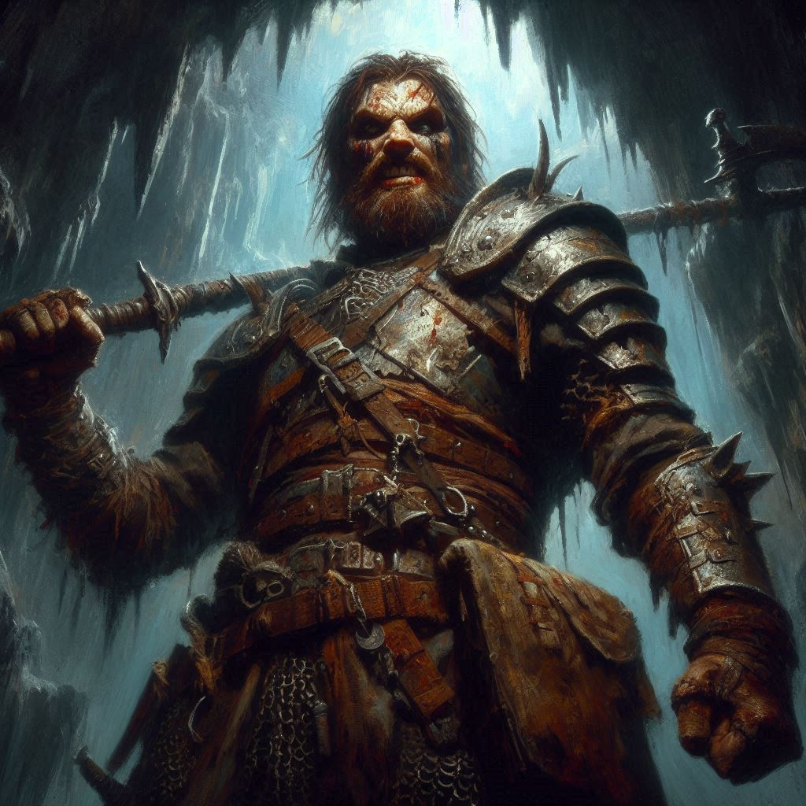

Double Crossed
You stand at the mouth of Hemlock Caverns, the dark entrance yawning before you like the jaws of a beast. The damp air is thick with tension, the weight of the task ahead pressing down on your chest. Elias is by your side, his face tense but resolute, and Princess Hawthorn—still disguised as a ranger—glares at the entrance with steely determination. You can feel the weight of her secrets, the lies she’s spun to maintain her ruse, but for now, you need her. You all have one shared goal: stop Varis.
Elias speaks first, his voice low. “We should move quickly, Kira. Varis won’t wait. If he opens that portal, Yaldaboath’s realm will spill into ours, and Belladonna will be the first to fall.”
You glance at him, noting the worry etched on his face. His love for you is unspoken, but it’s there in every look, every action. But now is not the time to dwell on such things. You push the thoughts aside, focusing on the mission.
“I know,” you say, tightening your grip on your bow. “We need to find Jorsh. He’s the key. If he can help us stop Varis, we might still have a chance.”
Hawthorn steps forward, her tone clipped. “Let’s not waste time. Varis is already ahead of us, and every moment we delay puts Yew in greater danger.”
You glance at her, sensing something more in her urgency—something personal. But again, there’s no time to pry into her motives. You nod, leading the way into the caverns.
The passage is narrow, the stone walls pressing in as you make your way deeper into the labyrinth of tunnels. Your mind races, thinking of Baider, of his capture, of Jorsh. The memories of your shared past with Jorsh haunt you, clouding your judgment with emotions you wish you could cast aside. But you can’t. You need to know why he chose this path, why he turned to darkness. And now, you wonder if there’s a chance to save him.
As you descend deeper into the caverns, the sound of footsteps and whispers echo through the tunnels. You freeze, signaling Elias and Hawthorn to stop.
“They’re close,” Elias whispers, his hand hovering over his sword hilt.
You nod. “Mercenaries. We’ll have to take them out if we’re going to reach the portal chamber.”
With silent agreement, you all move forward, inching toward the source of the sounds. You spot them soon enough—mercenaries in the garb of the Trade Ministry, armed and alert. You exchange a glance with Elias, then nock an arrow. The plan is clear: strike first, strike hard.
The first arrow flies, striking a mercenary in the throat. He crumples without a sound. Elias leaps forward, sword flashing, while Hawthorn pulls a dagger from her belt, moving with surprising agility. The battle begins in a whirlwind of steel and blood. You fight with every ounce of strength you possess, your arrows finding their marks, your movements swift and precise.
But the mercenaries are prepared.
Just as you think you’re gaining the upper hand, reinforcements pour in from a side tunnel. You’re quickly outnumbered. The clang of swords and the grunts of exertion fill the air, and your heart pounds in your chest. You catch a glimpse of Elias struggling against two opponents, his face etched with pain. Hawthorn, too, is engaged in fierce combat, but she’s tiring.
A mercenary lunges at you, and you barely manage to sidestep, your arrow grazing his arm. Before you can nock another, a heavy blow from behind knocks you off balance. You stumble, catching yourself just in time, but the tide of the battle is turning against you.
And then you hear it—the mocking voice of the mercenary captain.
“Princess Hawthorn,” he sneers, his voice dripping with malice. “Your little rebellion ends here. Did you really think you could stand against Varis? He’s already bought off your guards. They’re not coming.”
Hawthorn’s eyes widen, her breath catching. “You’re lying.”
The captain laughs. “Am I? You’ve already lost, princess. The only question is whether you die here or live long enough to see Varis take Yew.”
Desperation flashes across Hawthorn’s face, but she squares her shoulders, defiant. “I won’t let you win.”
You try to stand, your body screaming in protest, but it’s too late. The mercenaries close in, overwhelming you with their sheer numbers. You fight with all the fury you can muster, but it’s not enough.
A sword slashes across your side, and the pain is blinding. You collapse to the ground, gasping, blood pooling beneath you. Elias’s voice reaches your ears, but it sounds distant, muffled. You see him fighting with wild abandon, trying to reach you, but he’s too far away.
Hawthorn is the last to fall. She fights until the very end, her dagger flashing, her face a mask of determination. But even she is no match for the mercenaries. They surround her, and with a final, desperate scream, she collapses.
The world fades, your vision blurring as darkness closes in. You think of Baider, of Onyx, of Jorsh—of all the things you’ve lost. And as the light slips away, you wonder if you ever had a chance at all.